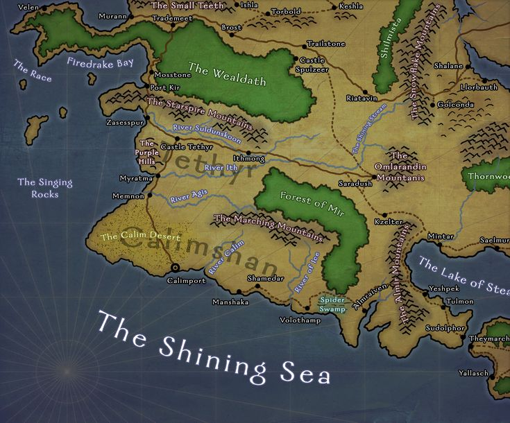

| home | campaign | characters |
| videos | R.I.P. | music |
CAMPAIGN |
|
Our journey begins in the year 1388 DR in the city of Saradush within the province of Tethyr. 20 years prior, Saradush had been sacked by Orcs. The Dukes of Saradush gathered up their armies and had successfully repelled the attackers. Despite being driven back into the Jungles of Mir, the Orcs had inflicted catastrophic damage on the citizens and their beloved city, Saradush. In current time, Saradush has been Attracting adventurers from all over Faerun. It has become a popular hub for travelers due to it acting as a crossroads between Amn, Tethyr and The Shaar. There you stand, before the gates of the great city of Saradush. They loom high above you, enveloping you in their shadow. You take a deep breathe… and enter. |
Map of Tethyr |
|

|